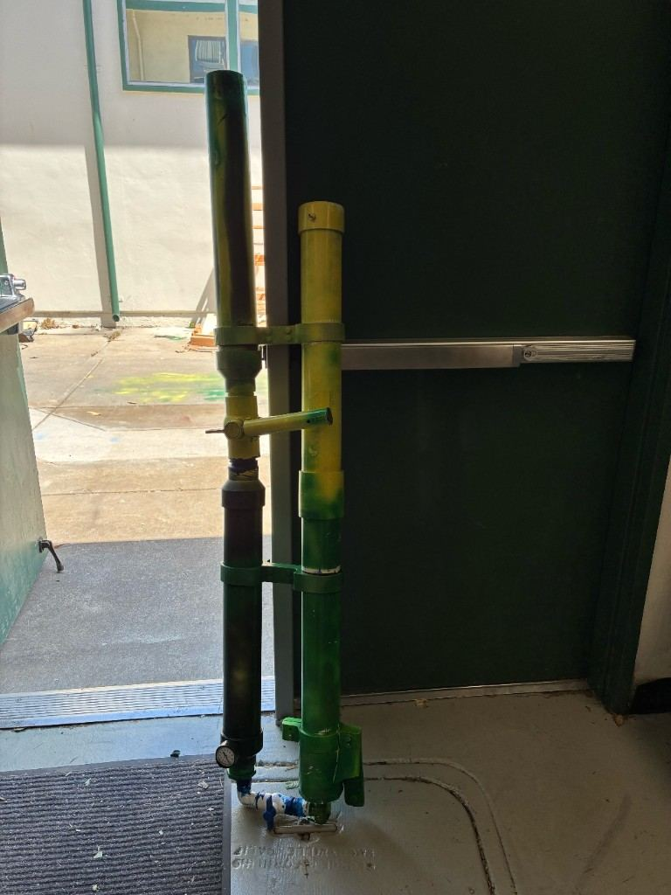
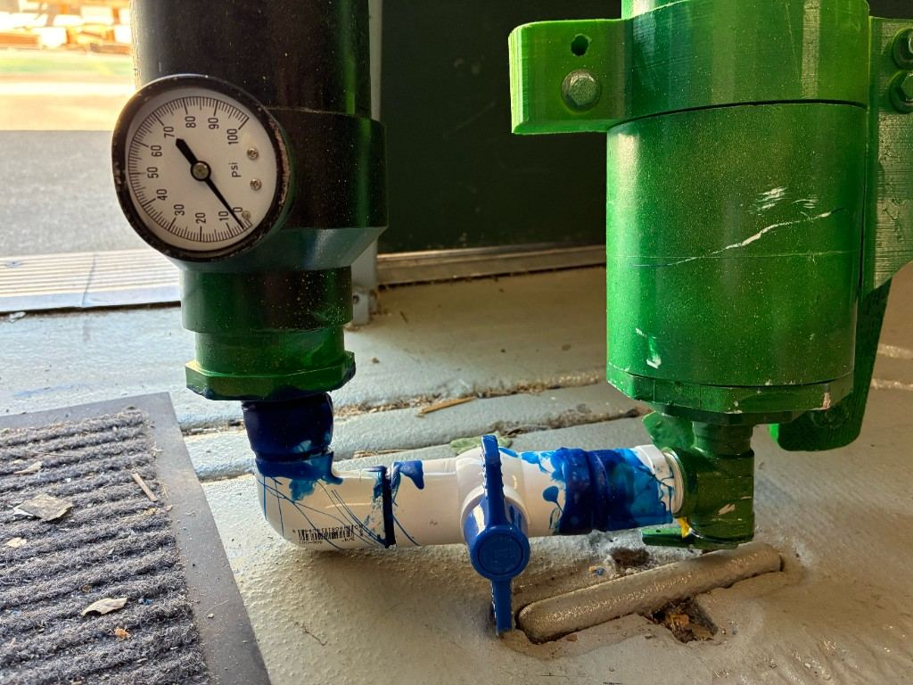
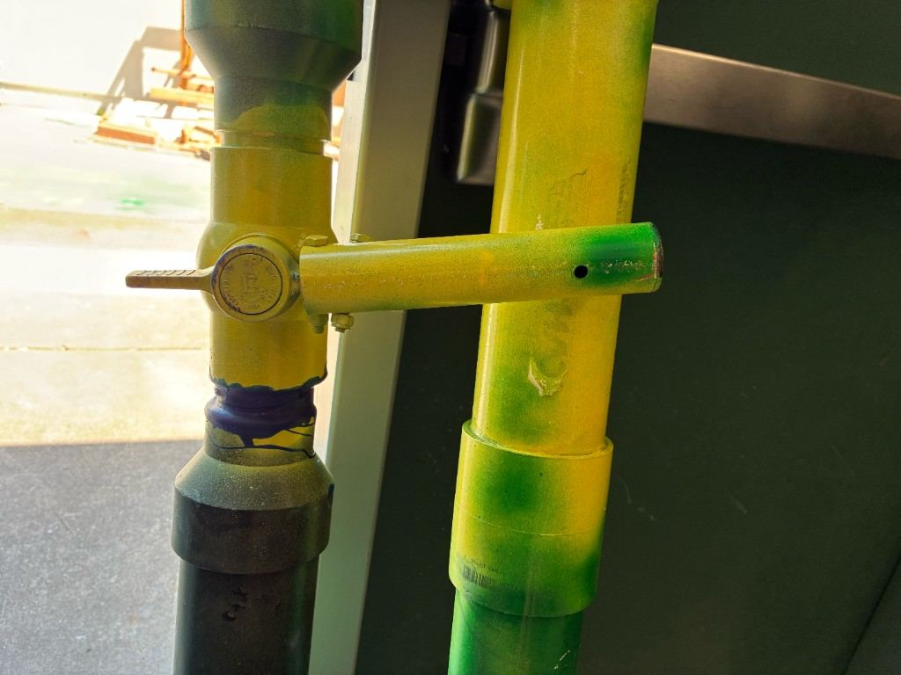

Problem and Research
Problem Statement
CVHS needs a safe, reliable launcher that can send event items farther than a normal throw without requiring Leadership students or event staff to understand complicated equipment.
Justification
The old school cannon was returned to engineering because users did not consistently know how to set it up. That means the real problem is launch distance plus simple operation.
Similar Solutions
- Hand throwing: free, but inconsistent.
- Commercial launchers: strong, but expensive.
- Spring concept: direct, but high-force and difficult to build safely.
- Air pressure prototype: adjustable and testable.
Review note
Add exact source citations and any real quote from Leadership about the old cannon.
Final Prototype

Completed air pressure cannon prototype after paint and assembly.
Your Solution
The final prototype stores energy in compressed air, shows pressure with a gauge, releases air through blue valve hardware and a handle control, and launches a lightweight event payload from a green/yellow launch tube.
Subsystems
- Black pressure chamber
- Pressure gauge and fill valve
- Yellow release handle
- Green/yellow launch tube
- Alignment brackets
- Safety labels and checklist


Build Procedure
- Identified the event-launcher problem and user needs.
- Compared hand throwing, commercial launchers, the old cannon, and spring concepts.
- Pivoted from spring force to air pressure after feasibility review.
- Built paired pipe assemblies with gauge, valves, handle, and brackets.
- Added paint, directions, and testing procedure.
Project Timeline
- Problem validation and stakeholder need
- Research and similar-solution comparison
- Spring concept and feasibility review
- Air pressure prototype build
- Directions, photos, testing, and final presentation
Testing and Results
Testing Method
- Range test at multiple pressure levels.
- Reload time test.
- First-time user checklist test.
- Leak and safety inspection before launching.
User Manual Cycle
Fill → Load → Fire → Refill/Reload → Refire. This short cycle came from the directions sheet so a non-engineering user can repeat the launch process.
Placeholder Results
35 ft30 psi average
63 ft45 psi average
82 ft60 psi average
35 secreload average
Conclusions/Reflections
The air pressure version better solves the event problem because it balances useful launch distance with simple controls, visible safety checks, and repeatable testing.
The biggest lesson was that a design is not successful just because it launches something. It is successful when the intended users can understand it, operate it, and repeat the process safely.
Why Graphics Matter
Graphics help the audience connect the idea to the physical prototype. They let viewers picture the launcher in action, understand what matters first, and see where future improvements could be made. In a complex project, order matters; visuals help turn a confusing explanation into a clear pitch.
How the Display Helps
The three-panel board sorts and compresses the project. It tells judges that the essential information is here and that I will walk them through it. Proper judging requires proper communication, and the display is the communication medium.